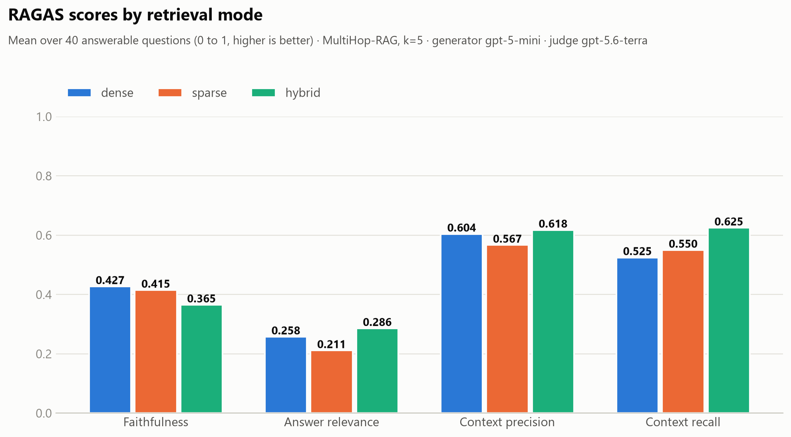
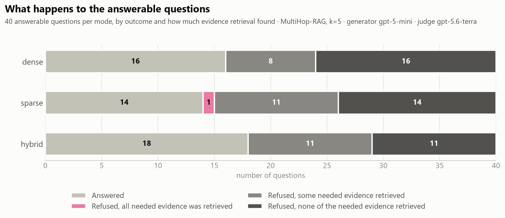
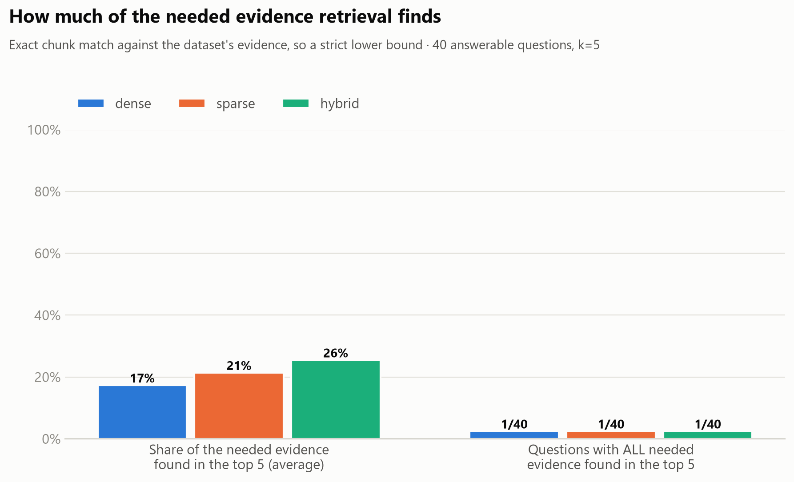
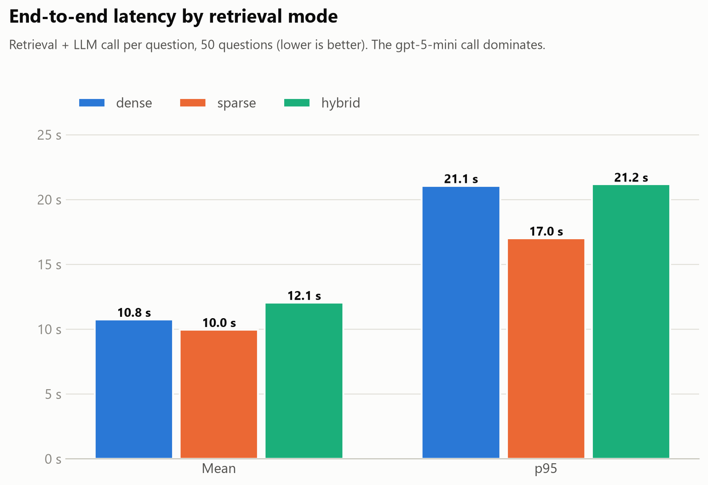
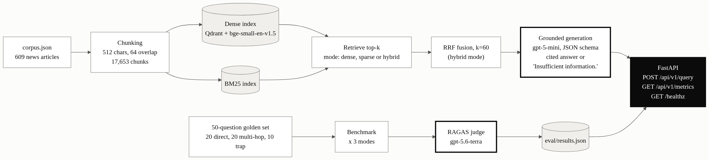

Explore the benchmark
Pick a question to see how dense, sparse and hybrid search did on it: what the model answered, which sources it cited, how much of the needed evidence search found, and the exact passages the model saw. Answers were written by gpt-5-mini from the top 5 passages.
Loading the recorded answers...
How to read the numbers: "needed passages" is a strict check against the exact evidence chunks the dataset lists, so it is a lower bound. RAGAS context recall is judged by a language model against the short reference answer, so the two can disagree: a short answer such as a company name can appear in a passage that is not one of the needed ones.
Results
Loading the benchmark results...




Key finding. Hybrid search found the most evidence, but with 40 scored questions the gain over dense is suggestive, not conclusive. The bigger finding is that search, not the language model, is the bottleneck: the top 5 results held only 17 to 26% of the evidence a question needs, so the model correctly refused more than half of the answerable questions. The technical report has the details and the limitations.
How it works

- Dense search finds passages by meaning, sparse by shared keywords (BM25), hybrid merges both with Reciprocal Rank Fusion.
- The top 5 passages go to
gpt-5-mini, which must cite them or answer "Insufficient information.". The scores come from a separate, stronger judge model (RAGAS). - 10 of the 50 questions are traps whose answer is not in the collection, to check that the system refuses instead of making something up.
Run it yourself
The live system (FastAPI, Qdrant, the same three search modes and a try-it box) starts with one command. It needs Docker; the first start takes about 20 minutes because it builds the search indexes. Asking new questions needs an OpenAI key in a .env file; browsing retrieved passages does not.
docker compose up --build
# then open http://localhost:8000